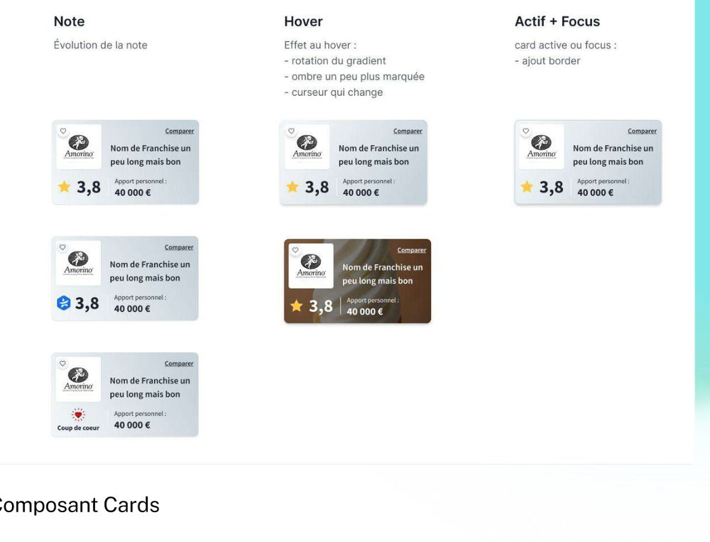

Projet 01 — Fondations
Discuter d'un projet similaire
Création d'un Design System from scratch

Problème
L'écosystème digital de Plus que pro reposait sur 3 sites distincts, conçus indépendamment, sans cohérence visuelle ni composants partagés.
Mon rôle
Conception et déploiement du Design System from scratch, en autonomie complète, des fondations jusqu'aux composants prêts à l'emploi.
Démarche
Audit de l'existant, création des tokens (couleurs, typographie, grille), développement des composants, documentation Figma pour les 3 équipes.
Résultat
Un Design System unifié, utilisé par 3 équipes sur 3 sites, réduisant le temps de conception et garantissant la cohérence visuelle.